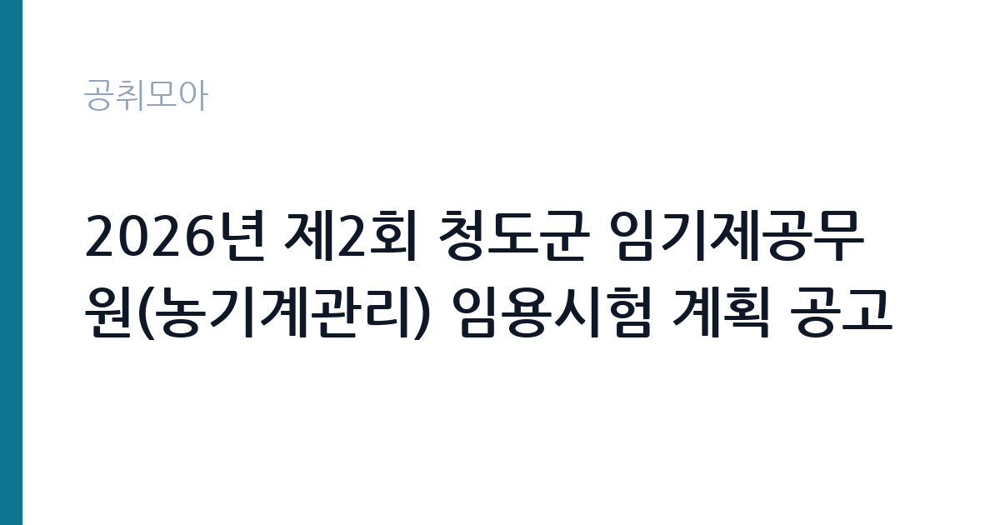

[지자체] 2026년 제2회 청도군 임기제공무원(농기계관리) 임용시험 계획 공고
경상북도 청도군 · 경북 · 마감 2026-11-11 (D-14) · 출처 나라일터

한눈에 보는 모집 조건
| 기관 | 경상북도 청도군 |
|---|---|
| 공고명 | 2026년 제2회 청도군 임기제공무원(농기계관리) 임용시험 계획 공고 |
| 고용형태 | 임기제 |
| 근무지 | 경북 |
| 게시일 | 2026-10-29 |
| 마감일 | 2026-11-11 (D-14) |
지원자격, 이렇게 읽으세요
- 시간선택제 임기제 라급 (8급 상당) 2명 시간선택제 임기제 마급 (9급
- 접수 ~2026-11-11 마감
- 세부 조건은 원문 공고문 확인
임기제공무원은 공무원 신분이지만 임용 기간이 정해져 있습니다. 전문성이 필요한 업무에 채용되며 임용 기간과 연봉등급이 공고문에 명시됩니다. 임기 중에는 공무원으로서의 복무 규정과 이해충돌 방지 의무가 적용됩니다. 이번 공고는 경상북도 청도군이 직접 진행하는 자체 전형입니다. 전기 직무는 전기기능사 이상의 자격을 요구하는 경우가 대부분입니다. 전기산업기사나 전기기사 자격을 우대하거나 필수로 두는 공고도 있습니다. 실무 경력 요건이 붙는 경우가 많아 경력 증명서와 자격증 사본을 준비해야 합니다. 고전압 설비를 다루는 직무는 안전 교육 이수 여부를 확인합니다. 채용 후에는 신원조회와 건강진단 절차가 이어집니다. 제출서류는 공고문에 적힌 순서대로 정리하면 담당자가 확인하기 쉽습니다. 응시 자격 판단이 애매하다면 접수 전에 채용 담당 부서로 문의하는 편이 안전합니다. 서류 제출 후에는 소명 기회가 없습니다. 학력이나 전공 요건이 없는 공고라도 제출서류 목록은 그대로 적용되므로 서류 준비 부담은 줄지 않습니다.
이 공고의 포인트
이 건은 경상북도 청도군가 같은 시기에 낸 2개 모집분야 가운데 전기·설비 기술 직무입니다. 다른 직무 공고와 요건이 다르므로 지원 전에 모집분야 표를 대조해야 합니다. 이 공고의 첫 번째 포인트는 고용 형태입니다. 임용 기간이 정해져 있지만 공무원 신분으로 복무 규정이 적용되고, 전문성이 인정되면 재임용이나 유사 직위 지원에 도움이 됩니다. 두 번째는 업무 범위가 명확하다는 점입니다. 전기·설비 기술 직무로 채용되므로 배치 이후 담당 업무가 크게 흔들리지 않습니다. 세 번째는 근무지입니다. 경북 지역 근무로 수도권 공고에 비해 지원자 분포가 넓지 않아 상대적으로 경쟁이 분산되는 경우가 있습니다. 근무 조건이 공고문에 구체적으로 적혀 있어 지원 전에 판단할 정보가 충분합니다. 다만 선발 인원이 2명으로 많지 않아 자격을 갖춘 지원자가 몰리면 경쟁률이 높아질 수 있습니다.
전형은 어떻게 진행되나
서류전형과 면접전형 외에 직무수행능력 평가가 붙는 경우가 있습니다. 평가 방식은 공고문에 구체적으로 적혀 있으므로 어떤 항목에 배점이 높은지 먼저 파악하십시오. 면접에서는 지원 동기보다 실제 업무 경험에 대한 질문이 많고, 답변의 구체성이 평가를 가릅니다. 전형 일정은 서류 마감 이후 빠르게 진행되므로 연락 가능한 번호를 정확히 기재하고 문자와 메일을 수시로 확인해야 합니다. 최종 단계에서는 결격사유 조회와 신체검사가 진행됩니다. 결과 발표는 문자와 이메일로 동시에 이뤄지지 않는 경우가 있어 두 경로를 모두 확인하십시오.
원문에서 확인한 전형 방식
2026년 제2회 청도군 임기제공무원 임용시험 계획을 다음과 같이 공고하오니 전문지식과 경력을 갖춘 유능한 인재들의 많은 응모를 바랍니다. 1. 공고기간: 2026. 10. 29. ~ 2026. 11. 8. 2. 원서접수: 2026. 11. 9. ~ 2026. 11. 11. 3. 임양분야 및 인원 : 농기계관리 시간선택제임기제 라급 2명 / 마급 2명 4. 응시자격: 붙임 공고문 참조 5. 접수방법: 방문 접수 또는 우편접수 6. 접수장소: 청도군 총무과(인사담당자 / 054-370-6083)
이런 분께 추천해요
- 전기 관련 자격과 실무 경력을 갖춘 분
- 안전 절차를 엄격히 지키는 분
- 야간·휴일 비상 대응이 가능한 분
지원 전 체크리스트
- 응시자격 요건과 경력 기준을 충족하는가 — 경력은 증명서로 입증해야 합니다
- 임용 기간과 연봉등급, 근무 시간 조건을 확인했는가
- 제출서류 목록을 모두 준비했는가 — 누락 시 서류 단계에서 탈락합니다
- 접수 마감 2026-11-11 이전에 접수 방식을 확인해 제출했는가
모집 일정과 제출 타이밍
2026-10-29에 공고가 올라왔고 접수는 2026-11-11까지입니다. 남은 기간은 13일이며, 이 기간에 자격증 사본과 경력증명서, 주민등록등본 같은 기본 서류를 모두 준비해야 합니다. 경력증명서는 발급에 며칠이 걸리는 경우가 있으니 가장 먼저 신청하십시오. 접수는 온라인과 우편·방문으로 나뉘는 경우가 많고, 우편 접수는 도착 기준으로 판정되므로 마감일 소인만 믿으면 안 됩니다. 면접 일정은 서류 발표 후 개별 통보되므로 제출 후에도 연락을 받을 수 있도록 유지해야 합니다. 마감 이후에는 어떤 사유로도 접수가 인정되지 않으므로 하루 전 제출을 목표로 하십시오.
직무 이해하기: 지자체
지방자치단체는 지역 행정과 복지, 시설 운영을 담당합니다. 부서별로 사업을 수행하고 결원이나 신규 사업에 따라 임기제와 기간제 인력을 채용합니다. 조례와 자체 인사 규정에 따라 채용 절차가 진행됩니다. 전기·설비 기술직은 건물과 시설의 전력 설비를 유지하는 일을 합니다. 수변전 설비와 배전반, 조명, 동력 설비를 점검하고 고장 부위를 찾아 수리합니다. 정전이나 누전 같은 사고가 발생하면 원인을 파악하고 복구 조치를 합니다. 안전 규정에 따라 작업 전 정전 확인과 절연 조치를 반드시 거쳐야 하며 작업 내용을 일지에 기록합니다. 야간과 휴일에 비상 연락을 받는 체계가 운영되기도 합니다. 근무조는 사업 일정과 기상 상황에 맞춰 편성되므로 면접에서 배치 구역을 확인하는 것이 좋습니다. 직무 교육은 입사 후 기관 자체 계획에 따라 진행되므로 사전 경험이 없어도 시작할 수 있습니다. 이 건의 근무 대상 지역·부서는 원문 기준 '농기계관리'입니다 원문에 '응시자격: 붙임 공고문 참조 5'라는 조건이 명시되어 있습니다.
자기소개서 작성 팁
전기·설비 지원서는 자격과 안전 습관을 함께 보여주는 것이 핵심입니다. 담당했던 설비 규모와 용량, 수행한 점검 주기를 구체적으로 쓰십시오. 사고를 예방한 경험이나 위험 요소를 개선한 사례는 강한 소재입니다. 안전 규정을 지키는 태도를 분명히 밝히고 비상 대응 경험이 있다면 함께 서술하십시오. 문항별 글자 수 제한을 먼저 확인하고, 각 문항의 첫 문장에 결론을 배치하는 방식이 읽기 쉽습니다. 지원 동기는 기관의 어떤 사업에 기여하겠다는 한 문장으로 시작하고, 이어서 본인의 경험을 근거로 붙이십시오. 감점을 피하려면 다른 기관에 보낼 수 있는 범용 문장을 그대로 쓰지 않는 것이 중요합니다. 기관 이름과 사업명이 문장 안에 자연스럽게 들어가야 준비도가 드러납니다.
면접 준비 포인트
면접에서는 안전 절차와 고장 대응 능력을 확인합니다. 정전이 발생했을 때 어떤 순서로 확인하는지, 감전 위험이 있는 작업을 어떻게 진행하는지 묻습니다. 무전압 확인과 잠금 장치 사용을 먼저 언급하십시오. 설비 이력 관리 방식과 야간 대응 가능 여부도 질문 대상입니다. 직무 특성상 체력이나 근무 시간에 대한 질문이 나올 수 있으므로 솔직하게 답하고 관리 계획을 함께 제시하십시오. 면접은 공고문에 적힌 직무 내용을 얼마나 이해하고 있는지 확인하는 질문으로 시작하는 경우가 많으니, 모집분야 문구를 그대로 읽어 두는 것이 도움이 됩니다.
급여·근무조건 읽는 법
경상북도 청도군의 구체적인 보수 수치는 이 공고 원문의 처우 항목과 보수표에서 확인해야 합니다. 공시 자료로 확인되지 않은 금액은 이 글에서 추정해 제시하지 않습니다. 알리오 2025년 결산 공시 기준 공공기관 전체 일반정규직 1인당 평균보수는 7,376만 9천원, 신입사원 평균초임은 4,031만 6천원입니다(무기계약직 미포함). 전기·설비 직무의 보수는 기관 임금표의 기본급에 자격 수당과 위험·특수 근무 수당이 더해지는 구조입니다. 자격 등급과 경력 연수에 따라 호봉이 달라지므로 경력 증빙이 급여 수준을 좌우합니다. 교대 근무가 포함되면 야간·휴일 근무수당이 붙어 실수령액이 기본급보다 높아지는 경우가 많습니다. 구체적인 금액은 공고문 처우표에서 확인하십시오. 2026년 적용 최저임금은 시급 10,320원, 월 환산 2,156,880원(주 40시간·209시간 기준)입니다. 고용노동부 고시 제2025-47호로 확정된 금액입니다. 공고문에 금액이 제시되지 않은 항목은 원문 보수표나 처우 설명에서 확인해야 하며 확인되지 않은 수치는 쓰지 않는 것이 원칙입니다. 비교할 때는 월 급여뿐 아니라 상여·명절휴가비·복지포인트·초과근무수당까지 포함한 연간 총액으로 계산하십시오. 기간제라면 계약 기간 동안의 총액을, 무기계약이라면 호봉 상승과 정년까지의 누적 소득을 기준으로 판단하는 편이 정확합니다.
자주 묻는 질문
- 선발 인원은 몇 명인가요?
공고문 기준 2명입니다. 직종별로 인원이 나뉘는 경우가 있으니 모집분야 항목을 함께 확인하십시오. - 근무지는 어디인가요?
경북 지역의 경상북도 청도군 소속 근무지입니다. 세부 주소와 출퇴근 조건은 원문 공고문에서 확인할 수 있습니다. - 보수는 얼마인가요?
채용 신분(임기제공무원)과 기관 임금 규정에 따라 정해지며 구체적인 금액은 공고문 처우 항목에 제시됩니다. 금액이 공개되지 않은 경우에는 원문의 보수표를 확인하십시오.
함께 보면 좋은 공고
[지자체] 청도군 보건소장(개방형직위) 임용시험 계획 변경공고 — 마감 2026-11-13[지자체] 2026년 제3회 화천군 지방공무원 경력경쟁 임용시험 재공고 — 마감 2026-11-02[지자체] 2026년 제2회 군산시 공무직근로자 채용계획 재공고 — 마감 2026-11-06출처: 나라일터 공개정보를 바탕으로 공취모아가 정리한 안내글입니다. 모집 조건·일정은 변경될 수 있으니 지원 전 반드시 원문 공고문을 확인하세요. 본 글은 정보 제공용이며 합격을 보장하지 않습니다.